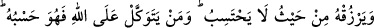

içinde sıkıntı olan her şeyden kurtulup âfiyet dilemesidir. Çünkü şiddet ve sıkıntının
ekserisi günahlar sebebiyle insanın başına gelir. Böylece kişi sanki belâ ve sıkıntıdan
âfiyet dilemiş ve nefse ârız olan şiddete kaynaklık eden günahlardan mağfiret dilemiş
gibidir.
İkincisi ise insanın başına bir belâ ve sıkıntı geldiğinde insan kendi nefsine
güvenmemelidir. Allah’a güvenmeli ve onun yardımını gözetmelidir. İşte bu mertebede
belâ dostluğa, çile ihsana, kin ve garaz sevgiye ve aşka, elem lezzete, sabır şükre
dönüşür ve böyle bir mertebeyi ancak ve ancak kemal sâhibi olan mükemmel kimseler
elde ederler.
3. Ve ona beklemediği yerden rızık verir. Kim Allah’a güvenirse O, ona yeter.
Şüphesiz Allah, emrini yerine getirendir. Allah her şey için bir ölçü koymuştur.
“Ve ona beklemediği yerden” bu ihsanın ardından “rızık verir.” Âyet metninde geçen
“min” ibtidâiyye olup “yerzukhu/ rızık verir” fiiline müteallıktır. Buna göre âyetin
mânâsı: “Kim Allah’tan korkarsa Allah ona aklına hayaline gelmeyecek ve beklemediği
yerden rızık verir ve o da evlendiği eşinin mehrini, haklarını ve nafakalarını ödeme
imkânı bulur” demektir.
Aynü’l-maânî isimli eserde bu âyet-i kerîme: “Kim Allah’tan korkarsa Allah ona,
gözetmediği ve beklemediği sofradan ya da beklediği gözettiği hesaptan rızık verir”
diye tefsir olunmuştur.
Sebeplerden geç ve takvâ talep et,
Bu şekilde Allah sana sebepsiz rızık ihsan etsin
Allah sana öyle bir yerden helâl bir rızık ulaştırır ki
Senin aklın ve hayalinden bile geçmez.
Peygamber Efendimiz (s.a.) buyurur ki: “Ben öyle bir âyet biliyorum ki insanlar bu
âyeti alsalar kendilerine yeter. Bu âyet; “Kim Allah’tan korkarsa Allah ona bir
çıkış ihsan eder ve ona beklemediği yerden rızık verir” âyet-i kerimesidir.”[188]
Peygamber Efendimiz bu âyet-i kerimeyi durmadan okuyor ve tekrarlıyordu.
Yine bir başka rivâyette Peygamber Efendimiz (s.a.): “Kim çok istiğfar ederse Allah
Teâlâ ona her türlü kederi için bir ferahlık, her türlü sıkıntısı için bir çıkış yolu ihsan
eder ve onu hiç beklemediği yerden rızıklandırır.”[189] buyurmuştur.
Rivâyet olunduğuna göre Avf bin Mâlik el Eşcaî (r.a.)’ın oğlu Sâlim’i müşrikler esir
alırlar. Avf bin Mâlik Peygamber Efendimiz’e gelerek:
“– Oğlum esir alındı” der ve ihtiyaç içinde olduğundan, fakir olduğundan şikâyetçi